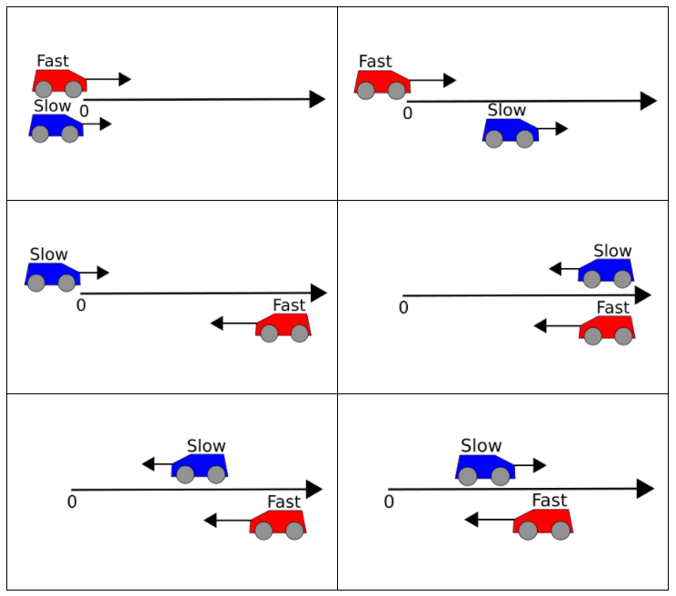

layout: true <div class="my-header"></div> --- class: center, middle # Conceptual Physics Daily Plans 2020-2021 --- class: halloween ##🎃 2020.10.27 Conceptual Physics 🕷️ .qotd[❓ of the 📆: What was your favorite halloween costume?] 1. ✍️ Whiteboard Ranking Task #2 2. 🗣️ Discussion 3. 💨 Calculating Velocity & Speed --- class:schodack ##2020.10.223 Conceptual Physics .qotd[❓ of the 📆: Hanging out by a camp fire, bonfire, or fireplace??] 1. Dororthy and Toto: Who went "further"? 2. Ranking Task and Claim-Evidence-Reasoning --- class: schodack #2020.10.16 Conceptual Physics .qotd[❓ of the 📆: If you had to delete all but 3 apps from your smartphone, which ones would you keep?] 1. Write a "motion story" for someone else to draw the graph of 2. Interpreting XT graphs (two cyclist problem) 3. Dorthy and Toto → Distance vs. Displacement Problem 4. Ranking Task --- class: schodack #2020.10.16 Conceptual Physics .qotd[❓ of the 📆: What is your silliest fear? 🐍] 1. 📖 Reading/Notes: Describing Motion in Words 2. 🎯 Practice with Describing Motion in Words 3. 🔦 Make your own position story 4. 📈 Position vs. Time Graphs Practice --- class:schodack #2020.10.13 Conceptual Physics .qotd[❓ of the 📆: Vacation on the beach 🏖️ or adventure in the mountains ⛰️?] 1. ⬅️ Ball Rolling Left: - Collect Data + Make Prediction 2. 💬 Ball Rolling Left Discussion: - Compare results to ball rolling right ➡️ What is similar? What is different? [**List on Whiteboard**] - In Ball Rolling Right we said the slope represented the ***speed*** and the intercept the ***starting point***. What new information does this graph provide us with? 3. 💭 Ava's hypothesis: - Claim, Evidence, Reasoning --- **Scientific Argument with Claim-Evidence-Reasoning format in physics**: **Claim:** Answer to the question -- **Evidence:** Features of the graph or measurements that support your claim -- **Reasoning:** Explain how the evidence supports your claim --- class: schodack #2020.10.09 Conceptual Physics .qotd[❓📆: What did you do without power or internet??] 1. Finish Ball Rolling Right Lab - Whiteboard + Discuss - *Sketch* of your graph + your physics equation 2. Ball Rolling Left Lab - What is similar? - What is different? - How will this affect your results? --- class: schodack #2020.10.06 Conceptual Physics .qotd[❓of the 📆: Breakfast: most important meal of the day? Or overrated? How do you fuel up for the day?)] 1. Do Now: - Open Pivot "Ball Rolling Right" (through Pivot or on Google Classroom) - Answer Questions 1-3 (what do you see, think, wonder) 2. Ball Rolling Right Lab --- class:schodack #2020.10.02 Conceptual Physics .qotd[❓📆: Celebrity Crush❓] 💬 Discussion aka Board Meeting 🎳 Ball Rolling Right --- class:schodack, center, middle #How did you do your experiment? --- class:schodack, center, middle #What is similar about the boards? #What is different about the boards? --- class:schodack ##What does the slope of your graphs 📈 represent? For every statement: "The < **quantity on vertical axis** > goes up < **slope value with vertical units** > for every 1 < **horizontal unit** > of < **quantity on horizontal axis** >." --- class: center, middle, schodack #What do the vertical intercepts represent? --- class: schodack #2020.09.29 Conceptual Physics .qotd[QotD: What is your most used emoji? 🤷♂️ 🤦♂️] 📏Finish Collecting Data 📈 Graph results ✍️ Whiteboard your lab 💬 Discussion aka Board Meeting 🎳 Ball Rolling Right --- class: schodack #2020.09.25 Conceptual Physics .qotd[QotD: What weird quirks did you pick up from your parents?] 1. Toy Buggy Lab: --- class: schodack, center, middle #Observations --- class: schodack, center, middle #What can we measure? How? --- class: schodack, center, middle #What could we measure AND graph? --- class: schodack ##Collect data on the motion of your buggies. Your goal is to (eventually) represent the motion of both buggies on the same graph. .center[] --- class: schodack #2020.09.22 Conceptual Physics .qotd[QotD: What is your most recent purchase?] 1. Finish up/discuss mathematical modeling at the gas pump 2. Density Lab - Last practice with mathematical modeling (interpreting slope) --- class:schodack #2020.09.18 Conceptual Physics .qotd[QotD: Pen, pencil or computer?] 1. Practice with mathematical modeling -- modeling the gas pump --- class:schodack #2020.09.15 Conceptual Physics .qotd[QotD: What slang are you really happy went out of fashion?] 1. Finish Ping Pong Bazooka 2. Talk about linear modeling 3. Practice with mathematical modeling -- modeling the gas pump --- #Linear Modeling $$ y = mx + b $$ -- $$m = \frac{\Delta y}{\Delta x} = \frac{y_2 - y_1}{x_2 - x_1}$$ -- For every statement: "The < **quantity on vertical axis** > goes up < **slope value with vertical units** > for every 1 < **horizontal unit** > of < **quantity on horizontal axis** >." --- class: schodack #2020.09.11 Conceptual Physics .qotd[QotD: Sweet (sugary foods like pancakes) or savory (salty foods like bacon) for breakfast?] 1. Fill out questionnaire on Google Classroom (in classwork tab) 1. Sign up for Pivot Interactives (code and link on Google Classroom) 2. Ping Pong Bazooka ---